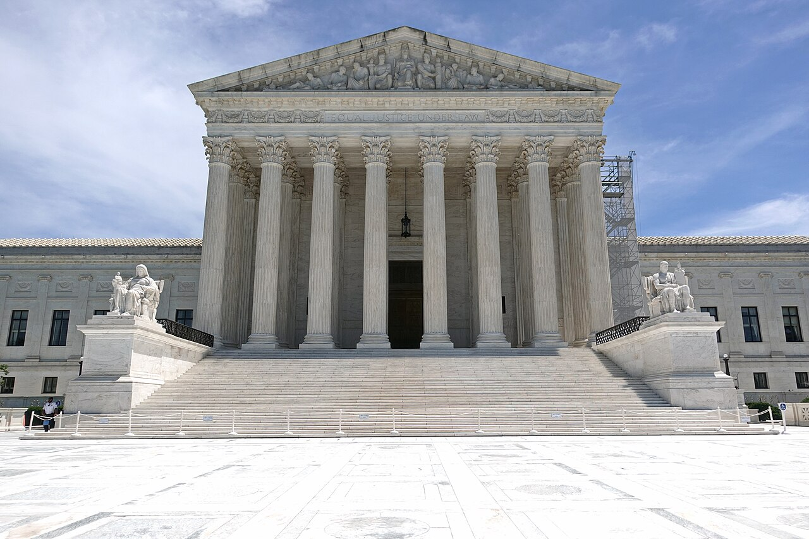

Vol. I · No. 184 · Saturday, November 28, 2026 · 13 items · 9.6 min read
OpenAI countersues Apple over trade secrets and pressure on shared suppliers; regulators close a $5.9 billion Indiana bank; banned Nvidia racks surface in Shanghai; and Tehran vows to break the US blockade.
AI · San Jose
OpenAI countersues Apple, accusing it of taking hardware secrets and pressing shared suppliers to stall OpenAI’s devices
Apple Park in Cupertino. Daniel L. Lu, CC BY-SA 4.0 / Wikimedia Commons
OpenAI filed counterclaims against Apple on Friday in federal court in San Jose, accusing the iPhone maker of misappropriating and of leaning on shared suppliers to slow its hardware push, CBS News and AFP reported. The filing answers Apple’s suit from this summer against OpenAI, its device unit , chief hardware officer and staffer Chang Liu.
… a trap that can be sprung whenever Apple sees an opportunity to slow down a potential competitor.
OpenAI’s counterclaims, on Apple’s employment terms, via CBS News, Nov. 27
OpenAI alleges that Apple asked suppliers to identify OpenAI projects and the people working on them, AFP reported. Suppliers moved or rescheduled OpenAI meetings; one shifted OpenAI production to a night shift, and another dropped planned work “because of threats from Apple.” OpenAI also says a spent six months at OpenAI, went back to Apple in June, sent “dozens of OpenAI documents” about a prototype to personal phone numbers and presented OpenAI’s plans to senior Apple staff in July.
The counterclaims also attack a one-year ban on former Apple staff at OpenAI recruiting their old colleagues, and Apple’s alleged encouragement to mix work files with personal iCloud accounts. An Apple spokesperson called the filing “a transparent attempt to distract from the substance,” AFP reported. OpenAI withdrew its motion to dismiss on Friday without giving a reason, according to AFP. Trial is set for July 19, 2027, 9to5Mac reported.
Markets & Deals · Evansville, Indiana
Regulators close $5.9 billion United Fidelity Bank, the largest US bank failure since April 2024, and First Citizens takes it over
The Office of the Comptroller of the Currency closed United Fidelity Bank of Evansville, Indiana, on Friday, finding it “in an unsafe or unsound condition to transact business,” the Evansville Courier & Press reported. Neither the regulator nor the bank has given a cause. Bank & Trust won the FDIC’s bidding with a , taking $5.9 billion of assets, $4.5 billion of deposits and $3.1 billion of loans at a discount of about $2.6 billion, with no deposit premium, its release said.
The FDIC puts the cost to the deposit insurance fund at about $1.83 billion, Investing.com reported, the largest failure since in April 2024. Total deposits were about $5.4 billion at the end of September; the gap to the assumed figure is brokered and other excluded accounts. The 20 branches in Indiana, Illinois, Colorado and Florida, and two in the US Virgin Islands, reopen Monday under First Citizens.
AI
Chips in the collateral
AI · Shanghai
Banned Nvidia Blackwell racks turn up at a Shanghai data center, traced through a loan pledge
Server racks in a data center. Carl Lender, CC BY 2.0 / Wikimedia Commons
Nvidia and GB200 racks, which need a US license to enter China, were installed at a Shanghai site called the , Bloomberg reported on Friday, according to Engadget. Hopper servers were there too. The trail ran through a loan: Shanghai Shuoyao pledged a GB300 rack as collateral for about $14 million from Shanghai Innovation Bank, and its serial number traced through a public warranty database to Taiwan’s .
Shuoyao calls itself a service provider to Megaspeed, a company Alice Huang controlled from 2023 until August 2025, with ties “limited to ordinary commercial cooperation.” Bloomberg said it had no evidence that Megaspeed diverted the chips, and Megaspeed denies wrongdoing. The Justice Department is investigating Megaspeed, and US officials moved on Monday to add it to a trade blacklist, Gizmodo reported.
AI · New York
Anthropic shares jump 11 percent to $91.88, back above the $83 offer price
Anthropic shares closed at $91.88 on Friday, up 11 percent in the shortened session and $8.88 above the , Forbes reported. The stock had closed below the offer on Tuesday and Wednesday, and Friday was only its third gain since the debut. It remains well under its $115 first-day high. Forbes credited a tech rebound; the Nasdaq rose 2.3 percent. The shares join on Nov. 30.
Markets & Deals
Cleaning up after the merger
Markets & Deals · Los Angeles
Skydance retires Warner Bros. Discovery’s $3.9 billion receivables line, calls $710 million of notes and registers 4.6 billion shares for resale
The Paramount gate on Melrose Avenue. Patrick Pelster, CC BY-SA 3.0 DE / Wikimedia Commons
Skydance said in a filing on Friday that a Warner Bros. Discovery paid off and terminated its $4 billion receivables purchase agreement on Nov. 20, with about $3.9 billion outstanding. On Nov. 25 it sent notices to redeem, at par plus accrued interest, $584.3 million of Paramount Global 2.90 percent notes and $33.4 million of Warner Media 3.80 percent notes on Dec. 23, and €84.3 million of Discovery Communications 1.90 percent notes on Dec. 29. All mature in 2027.
Skydance also filed a supplement registering 4,615,214,244 Class B shares for resale, which brings it no proceeds. Its $47 billion PIPE, about 3.9 billion non-voting shares, stays . Chief legal officer Makan Delrahim signed the filing. The stock is down about 49 percent this year, Stocktwits reported.
Markets & Deals · New York
Verizon is in talks to buy fiber provider Fidium for about $6 billion, including debt
Verizon is in talks to buy Fidium for about $6 billion including debt, the Financial Times reported on Friday, according to Reuters. A deal could come within weeks, though talks could fail or another bidder could emerge. Fidium, formerly Consolidated Communications, is owned by Searchlight Capital Partners and , which took it private for $3.1 billion. It runs fiber in 21 states and would add 351,000 homes in Maine, New Hampshire and Vermont. Verizon closed its $9.6 billion purchase of earlier this year.
Markets & Deals · New York
Treasury yields jump in Friday’s half session as futures price a 99 percent chance of a December Fed hike
The 10-year Treasury yield rose 7 basis points to 4.94 percent in Friday’s shortened session, the 2-year 6 points to 4.71 percent and the 30-year 7 points to 5.33 percent, TheStreet reported, after eight straight declines before the holiday. CME FedWatch put a Dec. 9 increase at 99 percent and in December and January at 66 percent. Brent settled at $95.44, up about 3 percent on the week, before an meeting on Sunday. The S&P 500 rose 1.6 percent to 7,297.
Law & the Courts
A plane, a six-pack and proportion
Law & the Courts · Washington
A $95,000 seaplane and 72 cans of beer: the Supreme Court hears an excessive-fines case on Tuesday

The Supreme Court in Washington. 颐园居, CC BY-SA 4.0 / Wikimedia Commons
The Supreme Court hears Jouppi v. Alaska on Tuesday, a challenge to the state’s forfeiture of a 1969 Cessna U206D worth about $95,000 after a passenger flew 72 cans of Budweiser and Bud Light toward Beaver, a dry village, according to the Institute for Justice, which represents the pilot. Alaska seized the plane at Fairbanks in April 2012, arguing that Kenneth Jouppi was willfully blind to at least one six-pack in plain view.
The question is whether a court weighing an claim judges the gravity of the offense or the defendant’s own conduct, SCOTUSblog reported. Alaska’s Supreme Court held that “the harm from even a six-pack of beer knowingly imported into a dry village is severe enough to warrant forfeiture of an aircraft.” The United States backs Alaska and takes of its time.
The World
A blockade tested, an ally rebuked
The World · Gulf of Oman · cross-spectrum: CR
The US disables a ship leaving Iran as Tehran vows to break the blockade and claims it retook two seized tankers
A US aircraft fired precision munitions at the stern of the Palau-flagged Pacific Archer in the Gulf of Oman on Thursday after it left Bandar Abbas, disabling its propulsion, Reuters reported. Central Command said the crew was unharmed. US forces have redirected 158 vessels and disabled six since the began in mid-July, Fox News reported. It was the since Nov. 7.
Mohammad Mokhber, an adviser to Supreme Leader Mojtaba Khamenei, said through state media that “neither will the Strait of Hormuz be reopened, nor will we allow the blockade to remain in place.” On Friday the navy commander, Shahram Irani, claimed commandos had retaken two tankers the US had seized, giving no names, place or date, CBS reported; the US has announced no such seizure since April. Trump said renewed strikes would “absolutely hit .”
The World · Kyiv and Rome · single-tier coverage: C
Zelensky tells Meloni the Libya strike was not coordinated with Europe, hours after Rome called his claim untrue
Zelensky said on X late Friday that Ukraine’s naval-drone attack near Benghazi, which hit the corvette and the cargo ship Angara, was conducted “without prior coordination with our European partners,” after a call with Giorgia Meloni, Reuters reported. Hours earlier Foreign Minister Antonio Tajani had said “what Zelenskyy said is not true.” Overnight about 460 drones flew at the Moscow region, Mayor Sergei Sobyanin said, and Russia claimed downed nationwide. A Russian strike on Nizhyn killed seven.
The World · Washington · single-tier coverage: C
Hackers breached the Air Force’s Cloud One platform, and Cyber Command was called in, Reuters reports
Hackers breached , the Air Force’s main cloud platform, Reuters reported on Friday, citing five people familiar with the matter; one said the attackers used a software flaw to reach its control plane. The intrusion was found within about the past month during upgrade work, and was called in. Migration of back-office applications was paused and some users lost administrator rights. The attackers and any data loss are unknown. The platform combines Microsoft, Amazon, Oracle and Alphabet clouds and hosts a system tracking munitions at more than 200 Air Force sites.
Entertainment & EASL
The SEC’s crisis-PR file
Entertainment & EASL · Baton Rouge
Emails show the SEC ran its message against LSU through a crisis-PR firm, days before a vote on expulsion
Tiger Stadium in Baton Rouge. Daniel Foster, CC BY-SA 2.0 / Wikimedia Commons
The Southeastern Conference coordinated its public messaging against LSU through a crisis-communications firm, public records obtained by Front Office Sports show. Missouri president forwarded the firm’s strategy guide to Commissioner Greg Sankey and every SEC school leader except LSU days before the conference sued LSU on Sept. 3. The guide said complying with court orders “does not prevent the SEC from continuing to defend its rules.” FOS names the firm Legend Labs; Sports Illustrated spells it Legends Labs. No fees were disclosed.
The firm tracked posts on X, including posts by the attorney Tom Mars. Tennessee’s Donde Plowman and Georgia’s Jere Morehead defended the on ESPN. The SEC added coach Will Wade as a defendant on Nov. 23, LSU moved to dismiss on Nov. 24, and the other members meet on to consider expelling LSU.
Entertainment & EASL · Los Angeles
Sunrise on the Reaping takes Thanksgiving Day with $11.6 million as Focker-in-Law passes Hexed
Lionsgate’s took $11.6 million on Thanksgiving Day and is projected to reach $85 million over five days and about $233 million domestic, Variety reported. Universal’s Focker-in-Law earned $7.7 million, ahead of Disney’s original animation Hexed at $4.5 million; their five-day projections are $40 million and $34.4 million. Netflix’s , playing only in IMAX, has $3.5 million in five days.
Compiled by Matthew Yellin · mattyellin.com · Est. May 2026 · A cross-spectrum brief drawn each morning from wires, filings, and the trade press